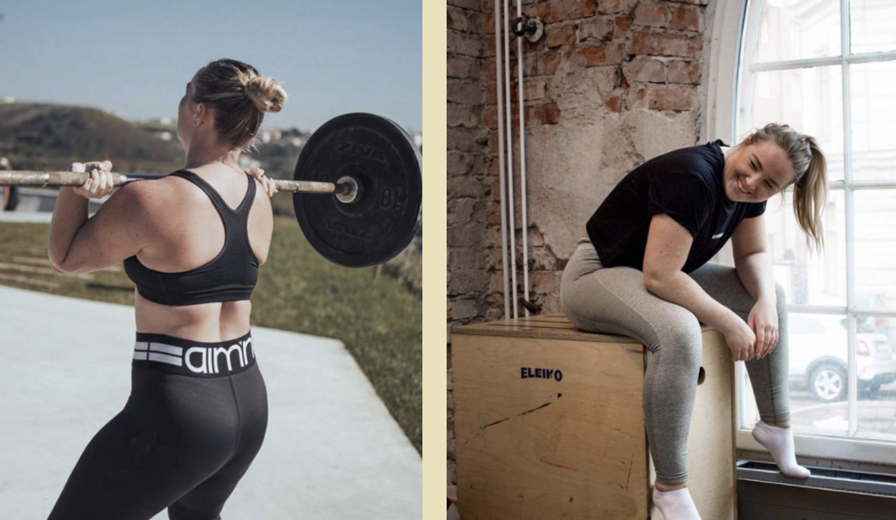

Intervjuer med kreativa människor som delar med sig av egna tankar och erfarenheter

Pauline Ollén
Pauline är en sådan person man vill följa och veta mer om. Hon är en svensk simhopperska som älskar adrenalin och träning. Pauline känns som en trygg och glad person och kanske är det därför hon är så bra på att sprida glädje till andra. Dessutom är hon ett praktexempel på någon som går sin egna väg och lyckas väldigt bra på färden.
Instagram: @paulineollen
När började du styrketräna och vad var anledningen?
Under hela min karriär inom simhoppet har jag kört styrketräning i olika former. Det började som styrketräning med kroppsvikt, för att sedan bli mer vikter som hantlar och kettlebells i unga tonåren. Om man inte kör styrketräning som simhoppare så kommer man förr eller senare gå sönder. Dessutom så presterar man bättre om man är starkare. Och såklart för att styrketräning är sjukt kul!
Hur har din styrketräning förändrats sedan du började och hur ser den ut idag?
Idag fokuserar jag mindre och mindre på övningar med isolerade muskelgrupper, och mer med basövningar som engagerar hela kroppen. Skivstången är min absoluta favorit och jag älskar tekniska lyft som ryck och stöt. Numera vågar jag också lägga på tyngre vikter eftersom jag vet att jag har både kapaciteten och tekniken.
Vad är det som driver dig att bli starkare och utvecklas på gymmet? Har du något tips till den som tycker det är svårt att hitta motivation?
Jag omger mig med människor som älskar träning och peppar alla oavsett nivå. För mig är
föreningslivet viktigt och att det är bra stämning där jag tränar. Att hela tiden dokumentera sina framsteg är också en viktig del. Jag filmar ofta mina övningar så att jag kan gå tillbaka och kolla hur det såg ut förra passet/veckan/månaden osv. Kanske lyfter man tyngre eller snyggare för varje vecka som går?

Hur tycker du att träningen påverkar din psykiska hälsa? Händer det att du får ångest av att inte träna?
För mig har träningen varit den viktigaste pusselbiten till att orka med vardagen och må bra psykiskt. Jag har periodvis haft mycket ångest, och under de perioderna har både träningen och mina träningskompisar varit det som fått mig att må bättre. Det händer ju mycket bra saker i kroppen när man rör på sig, bland annat utsöndras endorfiner, som får en att bli gladare. Det händer ibland att jag får ångest när jag inte tränar. Men det beror inte på att jag tycker att jag är ”dålig” för att jag inte tränar. Utan snarare för att jag inte får min dagliga dos av endorfiner. Dessutom har jag mycket svårare att somna om jag haft vilodag från träningen.
Finns det någon träningsform du inte håller på med och är sugen på att testa?
Ja självklart! Jag älskar ju att kolla på extremsporter och vill helst pröva allt som har med höjder eller hastigheter att göra. Annars har jag ju alltid drömt att hålla på med artistisk gymnastik.
Instagram: @paulineollen
Vem/ vilka är dina förebilder inom styrketräning?
Jag har så många! Men tre som jag verkligen ser upp till är Katarina Sollid, Jenny Freéd och Tia Clair Toomey.
Hur gammal var du när du började med simhopp och varifrån kom intresset?
Jag var 6 år gammal när jag började med simhopp, och det hela började med ett sommarläger med en kompis. Jag hade hållit på med gymnastik ett par år och älskade att bada. Så mina föräldrar tänkte att det kunde ju passa mig. Inte visste dem att jag 18 år senare fortfarande skulle vara aktiv inom sporten.
Vilka olika typer av simhopp finns och vilken kategori tävlar du inom?
Det finns 3 olika höjder som man tävlar från; 1 meter svikt, 3 meter svikt samt 10 meter plattform. Sedan finns även synchro där man hoppar två personer samtidigt. Jag tävlar i alla discipliner men föredrar plattform eller 1 meter.
Vilket är ditt bästa minne inom sporten?
När jag åkte på träningsläger i Moskva och andades simhopp 24 timmar om dygnet. Vi tränade så sjukt mycket men utvecklades också snabbt. Dessutom bodde vi och tränade i samma faciliteter som olympierna gjorde under OS i Moskva 1980.
Vad gillar du mest med simhopp? Vad får dig att fortsätta?
Adrenalin-kicken! Och att man får träna så allsidigt. Det är allt från styrketräning till gymnastik och stretch utöver det man gör i bassängen. Men man blir aldrig färdiglärd med simhopp, det kommer alltid nya tekniker eller ett nytt hopp att träna på.
Kan man börja med simhopp som vuxen och hur tycker du då man ska gå till väga?
Ja självklart kan man börja som vuxen! Jag är tränare för vuxna nybörjare och kan lova att man lär sig massor av användbara saker. Man får träna koordination, styrka och smidighet, och dessutom utmana sin höjdrädsla. Nybörjarkurser för vuxna finns i de flesta simhoppsföreningar, men bor du i Stockholm skulle jag höra av mig till Stockholmspolisens IF Simhopp (där jag tränar och coachar).
Instagram: @paulineollen
Du verkar vara en väldigt positiv och glad person. Har du alltid varit det och vad tror du det beror på?
Jag har nog alltid varit sprallig och haft mycket energi. Och jag är för det mesta glad när saker går som jag vill. För några år sedan hade jag en riktig identitetskris som berodde på prestationsångest i skolan. Jag var faktiskt nära att hoppa av utbildningen. Idag mår jag mycket bättre för att jag ser saker från ett mer positivt perspektiv. Dessutom har jag ett nytt favoritmotto; ”Vad är det värsta som kan hända?”. Oftast är det inte så mycket dåliga saker som kan hända och då är det fritt fram att köra. Det här mottot har fått mig att göra många knasiga saker men också öppnat många nya dörrar.
Det är många som lider av psykisk ohälsa. Har du något tips på hur man släpper loss och får perspektiv på livet?
Om man mår dåligt ska man såklart söka professionell hjälp. Men det finns också saker som man kan göra för att må bättre. Här är mina topp 5 tips:
1. Säg ja till saker! Pröva en ny sport, sök en distanskurs, hör av dig till någon du alltid velat hänga med, osv. Ofta är steget inte så långt och det kan leda till något helt nytt. Jag har halkat in på många bananskal bara för att jag sagt ja till något.
2. Åk på en resa helt själv. Det behöver inte vara backpacking en månad i Asien, men något som utmanar dig lite. Man lär sig mycket om sig själv och får distans till vardagslivet.
3. Skriv ned mål och vad du behöver göra för att ta dig dit. Tänk igenom vad du vill åstadkomma istället för att bara drömma om det.
4. Bry dig inte om andras kritik. Gör en plan, kör ditt race och bry dig mindre om att andra dömer dig.
5. Planera in tid för träning och återhämtning, samt planera in tid att göra ingenting alls. Vi behöver dagar där vi bara chillar på soffan.
Vad är något du är stolt över?
Att jag fortsatt med min sport upp i vuxen ålder. Många slutar idrotta när de börjar högstadiet eller gymnasiet. Det krävs lite beslutsamhet och engagemang men det har varit så värt det.